First goto mongodb website and login
For first time signup, this step can ignore
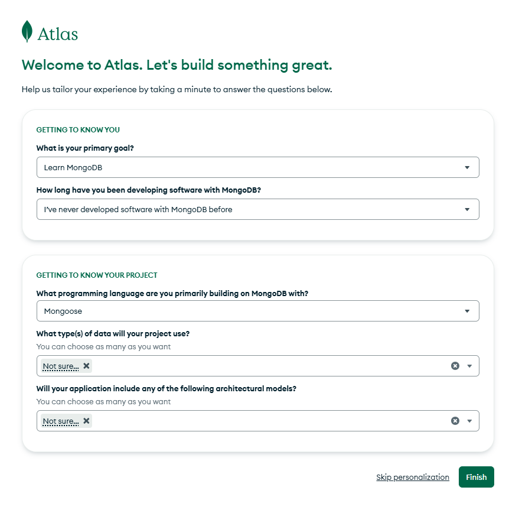
Second create a claster [select free plan] and remain field as it is will be defalt no need to change, then click on Create Deployment button.
Note: we can create only one claster in mongodb for free. We can make multiple database in one claster
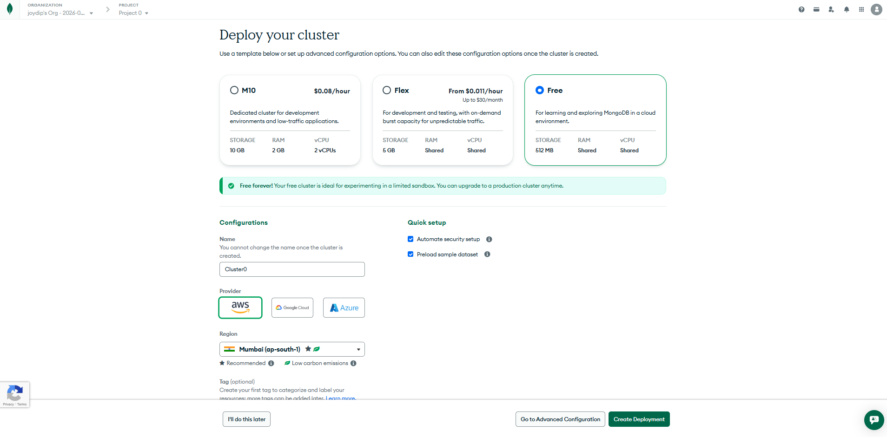
Third We need to copy the username and password from mongodb claster popup. Then click on Create Database User button
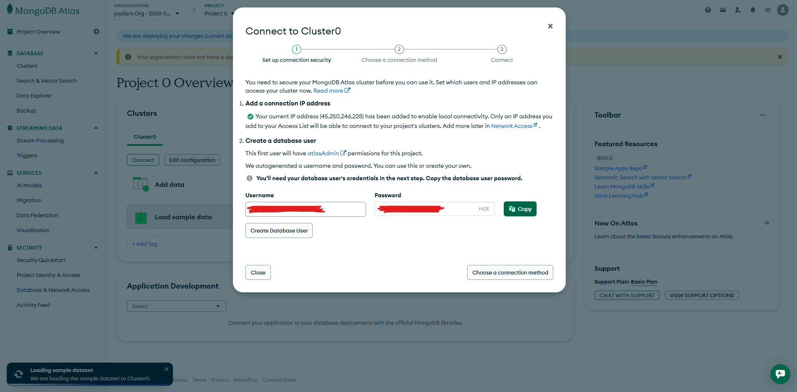
Fourth click on choose a connection method button in popup and copy the connection string and press "Done" button
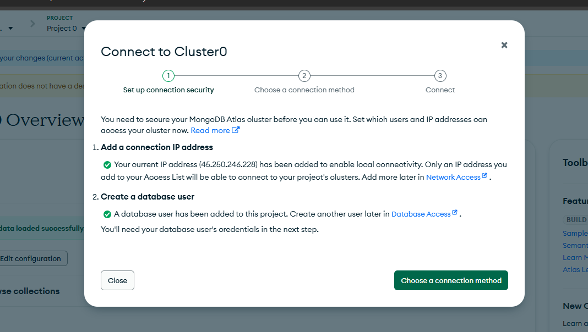
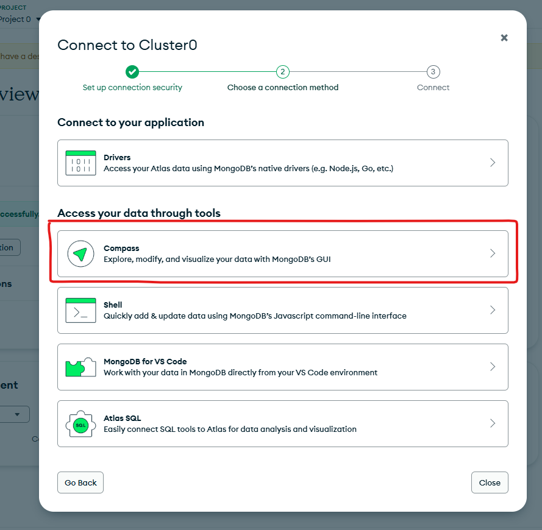
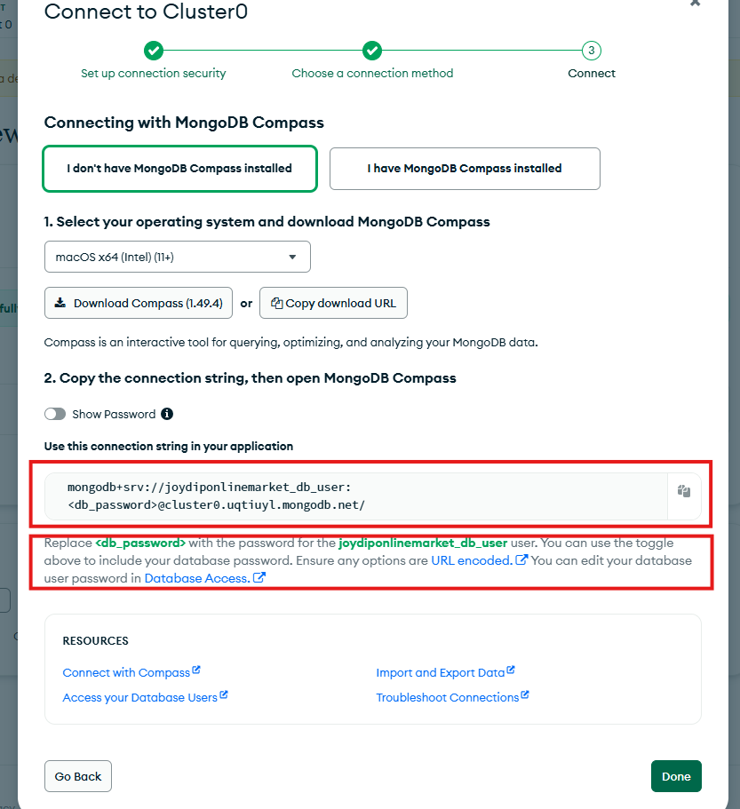
The mongodb interface is shown below. Click on Browse collections button
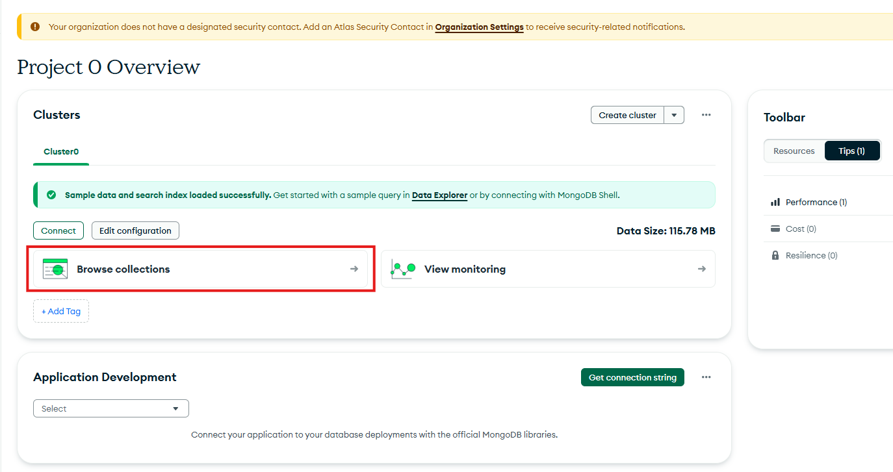
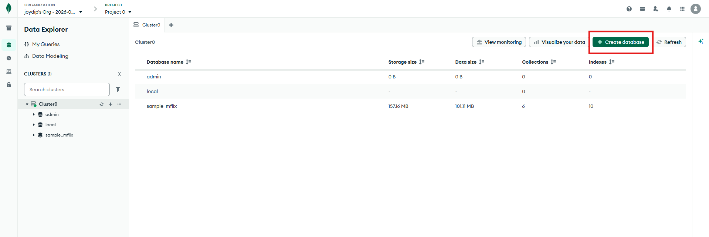
To create new Database click on Create database button. A popup will open where we need to enter the name of database and give a collection name and click on Create Database button
Here Collection like as table in sql
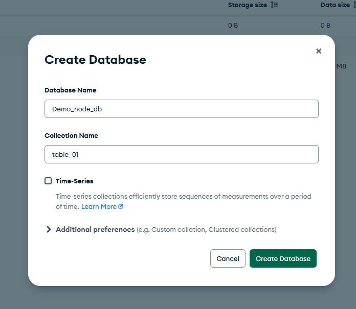
Final Interface of mongodb is shown below
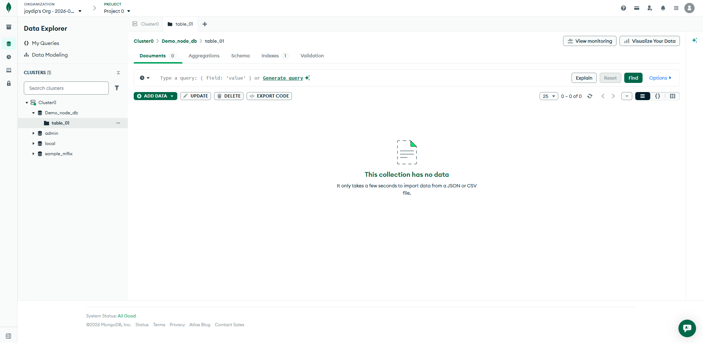
Installation Command npm i mongoose
create a folder name config in our project src folder and create a file name database.js
In database.js
In app.js
Now if we run our app it will show the message Connected to MongoDB in our terminal.
This is our basic database connection
Note: But the above database connection is not the best way to connect database. From the above code we are assuming that the database is connected. if we look in the console we can see that the below lines
Here first node server is starting and then database connection is happening. But this is not the best way to connect database. The best way to connect database is first connect database then start node server.
For that in database.js we need to export the connectDB function and import it in app.js
In app.js
First, install dotenv package npm i dotenv
In database.js
import dotenv package and update the connection string
In .env
Create a folder name models in our project src folder
In models/user.js We will create a schema and model for user
Now if we want to save new user data from postman
First we need to add Express json middleware in app.js.
if we not use this middleware then we can't get json data from postman, response will be undefined

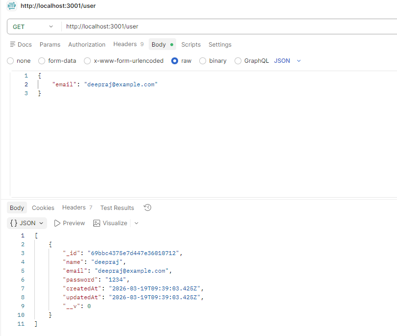
Note: If we have multiple data with same email then this api will return all same email id related data
So we use findOne method instead of find
Note: Now we get only one user data based on email which data will get first based on email.
install validator package npm i validator
Import validator package in app.js
Use validator in route handler
install validator package npm i validator
Create dataValidation.js file in src/utils folder
In dataValidation.js file
In app.js file
First install npm i bcrypt
In app.js file import const bcrypt = require('bcrypt');
First install npm i bcrypt
In app.js file import const bcrypt = require('bcrypt');
click on cookies button in postman hightlight with red border
When we console the cookie in profile api we will get the value of cookie from response as undefined. Because in nodejs can't read the cookie directly. To read the cookie we need to add a middleware in app.js file that is cookie-parser
Install npm i cookie-parser
In app.js file import const cookieParser = require('cookie-parser');
Then add app.use(cookieParser()); as a middleware
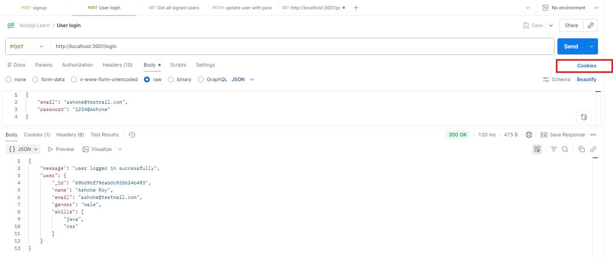
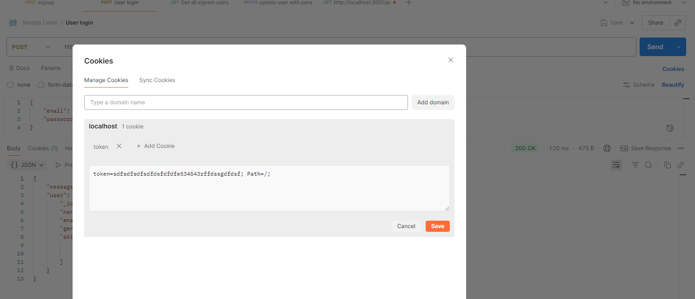
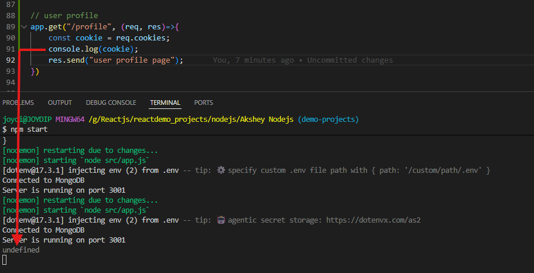
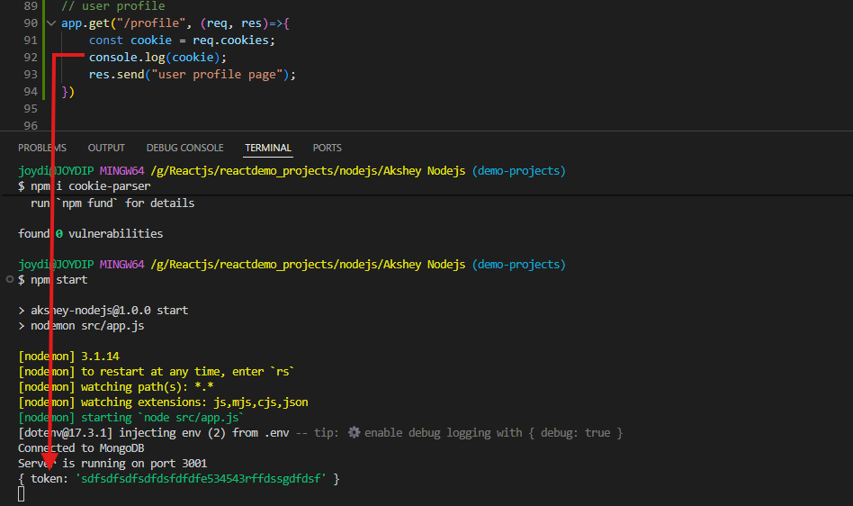
JWT token has three parts: header, payload, signature. In header we store the algorithm used to sign the token, in payload we store the user data, in signature we store the hash of header and payload using the secret key. This is used to verify the token.
We can generate the token using npm install jsonwebtoken
In app.js import JWT const jwt = require('jsonwebtoken');
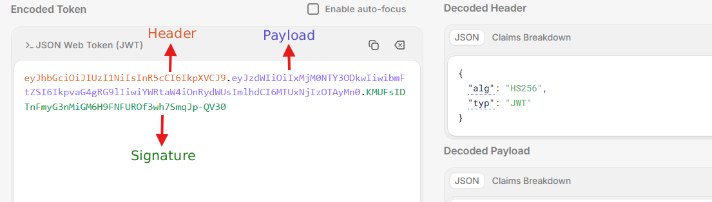
Syntax: jwt.sign(payload (data), secretKey, options) in option we can add expiresIn
jwt.sign({ data: 'foobar' }, 'secret', { expiresIn: '1h' });
expiresIn time unit
expiresIn: '1h' // 1 hour
expiresIn: 3600 // 1 hour
expiresIn: "60s" // 60 seconds
expiresIn: "10m" // 10 minutes
expiresIn: "1h" // 1 hour
expiresIn: "7d" // 7 days
secretKey is password that we use to encrypt the token and only server knows this password.
In app.js we create jwt token when user's email and password is valid and before sending the response like below:
Now if we call the login api we will get the token in cookie. Inside the token we have the user id of who is logged in
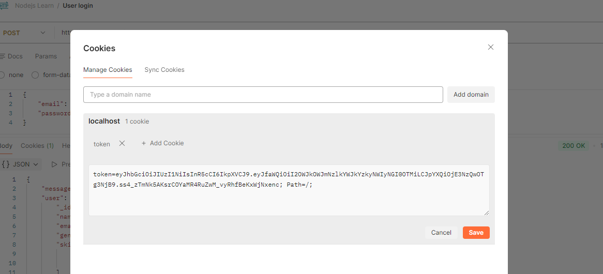
To decode the token we use jwt.verify(token, secretKey)
In profile api we decode the token using jwt.verify(token, secretKey)
We can make a middleware to check if user is authenticated or not.
Create auth.middleware.js in middleware folder
In auth.middleware.js we will write the code to check if user is authenticated or not
Now we need to use this middleware in our api where we want to check if user is authenticated or not
For now we will add this middleware to profile api
In app.js update the profile api
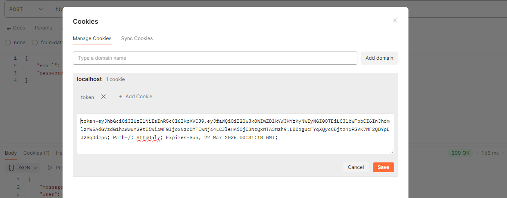
For example: jwt token is related to user, then we can create jwt token helper method in user schema.
So, in src/models folder in user.js we will create a helper method
Now we can use this helper method in app.js. We use this helper method in profile api
Now we can use this helper method in app.js. We use this helper method in login api